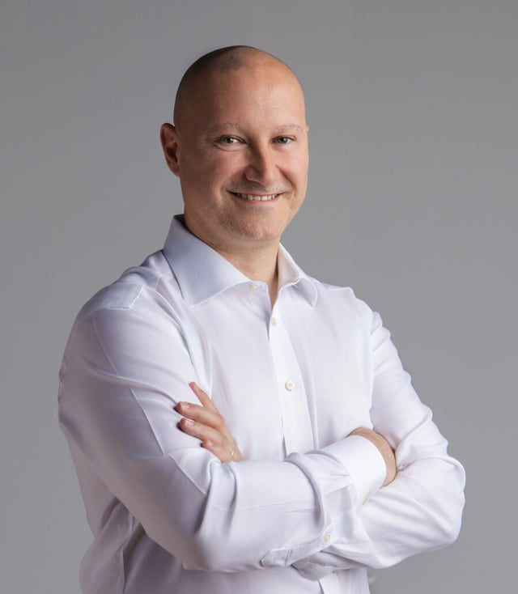

Head of ICT & Acting CIO | Board Advisor
Technology Executive with 15+ years leading enterprise IT, digital transformation, and research computing in mission-driven international organizations.
- Milan, Italy
- 14M € Budget Managed
- 25+ Team Size

- Acting CIO
- Head of IT
- SMART, PRINCE2, ITILv4
- Business continuity
- Data Center
HPC
Hybrid-Cloud - Cybersecurity
NIS2
GDPR
Compliance - 15+ Years Experience
Let Me Introduce Myself
Senior technology executive with 15+ years leading enterprise IT, research computing, cybersecurity, and digital transformation in complex, mission-driven international organizations.
Proven track record of aligning technology strategy with institutional objectives, delivering measurable business outcomes, and building high-performing teams. Expertise spans IT governance, digital transformation, HPC/data center operations, cybersecurity frameworks, and research technology enablement.
Data Centers
HPC & Enterprise
Cybersecurity
GDPR & Compliance
Cloud
Hybrid Architecture
Leadership
25+ FTEs Managed
Professional Experience
A track record of leadership in world-class research institutions and enterprise environments.
- Current Role
Head of ICT & Digitisation (Acting CIO)
Human Technopole
Jan 2023 - Present | Milan, Italy
- Strategic ICT leadership across infrastructure, workplace, security, and enterprise platforms (25+ FTEs; 7 direct reports).
- Technology roadmap and execution governance aligned to institutional priorities and measurable outcomes.
- 30% efficiency gain and 45% process reduction through digital transformation and automation.
- 20PB+ scientific workloads supported with 99.99% service availability.
Data Center Infrastructure Manager
Human Technopole
May 2022 - Dec 2022 | Milan, Italy
Led high-performance infrastructure operations, backup/DR strategy, standards definition, network security, and data center procurement planning.
Storage & Virtualisation Engineer
Human Technopole
Jan 2021 - May 2022 | Milan, Italy
Managed PowerScale/NetApp storage and VMware/VDI platforms, plus Linux services supporting research computing operations.
Systems & Virtualisation Engineer
European Molecular Biology Laboratory (EMBL)
Oct 2018 - Dec 2020 | Heidelberg, Germany
Managed 28-host VMware cluster (650+ VMs), 18-node NetApp estate (~9PB), vSAN for GPU VDI, and infrastructure automation with Python/Puppet/Foreman/Zabbix.
Systems Engineer
European Molecular Biology Laboratory (EMBL)
Oct 2012 - Oct 2018 | Heidelberg, Germany
Delivered enterprise virtualization and storage lifecycle upgrades (ESX/ESXi 4.1 through 6.7) across multi-site environments.
IT Manager
Digital Arts & Designers, S.L.
Jul 2010 - Sep 2012 | Las Palmas de Gran Canaria, Spain
Managed IT projects, Linux/server administration, network operations, monitoring, and technical procurement/vendor relationships.
Key Strategic Achievements
Measurable impact across digital transformation, cybersecurity, and financial optimization.
Strategy-to-Execution Transformation
Converted strategy into execution at Human Technopole, delivering 30% efficiency improvement and 45% manual-process reduction through targeted digital modernization and automation.
Cybersecurity & Control Maturity
Embedded GDPR-aligned security governance and operational controls across core services, contributing to a 60% reduction in security incidents.
Scalable Operating Reliability
Stabilized and scaled infrastructure supporting 20PB+ scientific workloads while maintaining 99.99% service reliability in production environments.
Governance, Capital Efficiency & Vendor Performance
Restructured supplier governance and contract strategy to produce 40-60% optimization in targeted agreements and improve service accountability.
Technology Landscape
Expertise across infrastructure, cloud, storage, security, and operations.
Infrastructure & Cloud
- Endpoint management
- Collaboration stack (M365)
- SSO / MFA / identity integrations
- VMware vSphere/Horizon, OpenNebula, oVirt
- Linux & Windows Server
- Hybrid Cloud, Docker, Kubernetes
Storage & Data
- NetApp, Dell PowerScale, PowerStore, Unity
- vSAN, QNAP, Synology
- Veeam, TSM, Bacula
- HPC / Research Computing
- Backup, Business Continuity, Disaster Recovery
Security & Operations
- Cybersecurity frameworks / GDPR / compliance
- ITIL 4, PRINCE2, SMART
- IAM / RBAC / endpoint security
- Audit readiness & controls mapping
- Foreman, Puppet, Ansible, Zabbix, Python
Core Competencies
Let's Connect
I'm always interested in hearing about new projects, opportunities, and challenges in the technology leadership space.
-
Location
Milan, Italy